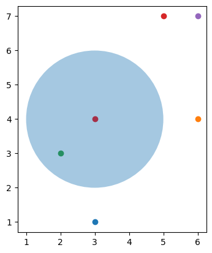

UTS-PENDATA#
Naive Bayes#
library
import numpy as np
import matplotlib.pyplot as plt
import pandas as pd
import sklearn
mengambil dataset
dataset = pd.read_csv('https://raw.githubusercontent.com/datasets/breast-cancer/master/data/breast-cancer.csv')
dataset.head(5)
| age | mefalsepause | tumor-size | inv-falsedes | falsede-caps | deg-malig | breast | breast-quad | irradiat | class | |
|---|---|---|---|---|---|---|---|---|---|---|
| 0 | 40-49 | premefalse | 15-19 | 0-2 | True | 3 | right | left_up | False | recurrence-events |
| 1 | 50-59 | ge40 | 15-19 | 0-2 | False | 1 | right | central | False | false-recurrence-events |
| 2 | 50-59 | ge40 | 35-39 | 0-2 | False | 2 | left | left_low | False | recurrence-events |
| 3 | 40-49 | premefalse | 35-39 | 0-2 | True | 3 | right | left_low | True | false-recurrence-events |
| 4 | 40-49 | premefalse | 30-34 | 3-5 | True | 2 | left | right_up | False | recurrence-events |
memisahkan dataset menjadi set pelatihan dan set uji
X = np.array([[1, 3],[4, 6],[3, 2],[7, 5],[7, 6]])
for i in range(len(X)):
plt.scatter(X[i][1], X[i][0])
plt.scatter(3, 4, color='red')
circle = plt.Circle((3, 4), radius=2, alpha=0.4)
plt.gca().add_patch(circle)
plt.axis('scaled')
plt.show()
euclidianDis = np.sqrt((3-2)**2 + (4-3)**2)
print(euclidianDis)

1.4142135623730951
class NaiveBayesClassifier(object):
def __init__(self):
pass
#Input: X - features of a trainset
# y - labels of a trainset
def fit(self, X, y):
self.X_train = X
self.y_train = y
self.no_of_classes = np.max(self.y_train) + 1
#This is our function to calculate all nodes/samples in our radius
def euclidianDistance(self, Xtest, Xtrain):
return np.sqrt(np.sum(np.power((Xtest - Xtrain), 2)))
#our main function is predict
#All calculation is done by using our test or new samples
#There are 4 steps to be performed:
# 1. calculate Prior probability. Ex. P(A) = No_of_elements_of_one_class / total_no_of_samples
# 2. calculate Margin probability P(X) = No_of_elements_in_radius / total_no_of_samples
# 3. calculate Likeliyhood (P(X|A) = No_of_elements_of_current_class / total_no_of_samples
# 4. calculate Posterior probability: P(A|X) = (P(X|A) * P(A)) / P(X)
# NOTE: Do these steps for all clases in dataset!
#
#Inputs: X - test dataset
# radius - this parameter is how big circle is going to be around our new datapoint, default = 2
def predict(self, X, radius=0.4):
pred = []
#Creating list of numbers of elements for each class in trainset
members_of_class = []
for i in range(self.no_of_classes):
counter = 0
for j in range(len(self.y_train)):
if self.y_train[j] == i:
counter += 1
members_of_class.append(counter)
#Entering the process of prediction
for t in range(len(X)):
#Creating empty list for every class probability
prob_of_classes = []
#looping through each class in dataset
for i in range(self.no_of_classes):
#1. step > Prior probability P(class) = no_of_elements_of_that_class/total_no_of_elements
prior_prob = members_of_class[i]/len(self.y_train)
#2. step > Margin probability P(X) = no_of_elements_in_radius/total_no_of_elements
#NOTE: In the same loop collecting infromation for 3. step as well
inRadius_no = 0
#counter for how many points are from the current class in circle
inRadius_no_current_class = 0
for j in range(len(self.X_train)):
if self.euclidianDistance(X[t], self.X_train[j]) < radius:
inRadius_no += 1
if self.y_train[j] == i:
inRadius_no_current_class += 1
#Computing, margin probability
margin_prob = inRadius_no/len(self.X_train)
#3. step > Likelihood P(X|current_class) = no_of_elements_in_circle_of_current_class/total_no_of_elements
likelihood = inRadius_no_current_class/len(self.X_train)
#4. step > Posterial Probability > formula from Bayes theorem: P(current_class | X) = (likelihood*prior_prob)/margin_prob
post_prob = (likelihood * prior_prob)/margin_prob
prob_of_classes.append(post_prob)
#Getting index of the biggest element (class with the biggest probability)
pred.append(np.argmax(prob_of_classes))
return pred
def accuracy(y_tes, y_pred):
correct = 0
for i in range(len(y_pred)):
if(y_tes[i] == y_pred[i]):
correct += 1
return (correct/len(y_tes))*100
from google.colab import files
uploaded = files.upload()
KeyboardInterruptTraceback (most recent call last)
<ipython-input-6-21dc3c638f66> in <cell line: 2>()
1 from google.colab import files
----> 2 uploaded = files.upload()
/usr/local/lib/python3.10/dist-packages/google/colab/files.py in upload()
67 """
68
---> 69 uploaded_files = _upload_files(multiple=True)
70 # Mapping from original filename to filename as saved locally.
71 local_filenames = dict()
/usr/local/lib/python3.10/dist-packages/google/colab/files.py in _upload_files(multiple)
151
152 # First result is always an indication that the file picker has completed.
--> 153 result = _output.eval_js(
154 'google.colab._files._uploadFiles("{input_id}", "{output_id}")'.format(
155 input_id=input_id, output_id=output_id
/usr/local/lib/python3.10/dist-packages/google/colab/output/_js.py in eval_js(script, ignore_result, timeout_sec)
38 if ignore_result:
39 return
---> 40 return _message.read_reply_from_input(request_id, timeout_sec)
41
42
/usr/local/lib/python3.10/dist-packages/google/colab/_message.py in read_reply_from_input(message_id, timeout_sec)
94 reply = _read_next_input_message()
95 if reply == _NOT_READY or not isinstance(reply, dict):
---> 96 time.sleep(0.025)
97 continue
98 if (
KeyboardInterrupt:
def run():
# Importing the dataset
dataset = pd.read_csv('breast-cancer.csv')
X = dataset.iloc[:, [2, 3]].values
y = dataset.iloc[:, 4].values
# Splitting the dataset into the Training set and Test set
from sklearn.cross_validation import train_test_split
X_train, X_test, y_train, y_test = train_test_split(X, y, test_size = 0.25, random_state = 0)
# Feature Scaling
from sklearn.preprocessing import StandardScaler
sc = StandardScaler()
X_train = sc.fit_transform(X_train)
X_test = sc.transform(X_test)
#Testing my Naive Bayes Classifier
NB = NaiveBayesClassifier()
NB.fit(X_train, y_train)
y_pred = NB.predict(X_test, radius=0.4)
#sklearn
from sklearn.naive_bayes import GaussianNB
NB_sk = GaussianNB()
NB_sk.fit(X_train, y_train)
sk_pred = NB_sk.predict(X_test)
print("Accuracy for my Naive Bayes Classifier: ", accuracy(y_test, y_pred), "%")
print("Accuracy for sklearn Naive Bayes Classifier: ",accuracy(y_test, sk_pred), "%")
run()
---------------------------------------------------------------------------
ModuleNotFoundError Traceback (most recent call last)
<ipython-input-73-ec9775ede022> in <cell line: 1>()
----> 1 run()
<ipython-input-72-a10102ba0b60> in run()
7
8 # Splitting the dataset into the Training set and Test set
----> 9 from sklearn.cross_validation import train_test_split
10 X_train, X_test, y_train, y_test = train_test_split(X, y, test_size = 0.25, random_state = 0)
11
ModuleNotFoundError: No module named 'sklearn.cross_validation'
---------------------------------------------------------------------------
NOTE: If your import is failing due to a missing package, you can
manually install dependencies using either !pip or !apt.
To view examples of installing some common dependencies, click the
"Open Examples" button below.
---------------------------------------------------------------------------
from sklearn.model_selection import train_test_split
X_train, X_test, y_train, y_test = train_test_split(X, y, test_size = 0.2)
from sklearn.preprocessing import StandardScaler
sc = StandardScaler()
X_train = sc.fit_transform(X_train)
X_test = sc.transform(X_test)
KNN#
import library
import pandas as pd
from sklearn.neighbors import KNeighborsClassifier
from seaborn import load_dataset
mengambil dataset
df = pd.read_csv("https://raw.githubusercontent.com/datasets/breast-cancer/master/data/breast-cancer.csv")
df.head()
| age | mefalsepause | tumor-size | inv-falsedes | falsede-caps | deg-malig | breast | breast-quad | irradiat | class | |
|---|---|---|---|---|---|---|---|---|---|---|
| 0 | 40-49 | premefalse | 15-19 | 0-2 | True | 3 | right | left_up | False | recurrence-events |
| 1 | 50-59 | ge40 | 15-19 | 0-2 | False | 1 | right | central | False | false-recurrence-events |
| 2 | 50-59 | ge40 | 35-39 | 0-2 | False | 2 | left | left_low | False | recurrence-events |
| 3 | 40-49 | premefalse | 35-39 | 0-2 | True | 3 | right | left_low | True | false-recurrence-events |
| 4 | 40-49 | premefalse | 30-34 | 3-5 | True | 2 | left | right_up | False | recurrence-events |
melihat ukuran dataset
df.shape
(272, 10)
membagi data ke X dan Y
# X tanpa label
df = df.dropna()
X = df[['deg-malig']]
y = df['class']
df.head()
| age | mefalsepause | tumor-size | inv-falsedes | falsede-caps | deg-malig | breast | breast-quad | irradiat | class | |
|---|---|---|---|---|---|---|---|---|---|---|
| 0 | 40-49 | premefalse | 15-19 | 0-2 | True | 3 | right | left_up | False | recurrence-events |
| 1 | 50-59 | ge40 | 15-19 | 0-2 | False | 1 | right | central | False | false-recurrence-events |
| 2 | 50-59 | ge40 | 35-39 | 0-2 | False | 2 | left | left_low | False | recurrence-events |
| 3 | 40-49 | premefalse | 35-39 | 0-2 | True | 3 | right | left_low | True | false-recurrence-events |
| 4 | 40-49 | premefalse | 30-34 | 3-5 | True | 2 | left | right_up | False | recurrence-events |
#y labelnya saja
y = df["class"].values
y[0:272]
array(['recurrence-events', 'false-recurrence-events',
'recurrence-events', 'false-recurrence-events',
'recurrence-events', 'false-recurrence-events',
'false-recurrence-events', 'false-recurrence-events',
'false-recurrence-events', 'false-recurrence-events',
'false-recurrence-events', 'false-recurrence-events',
'false-recurrence-events', 'false-recurrence-events',
'recurrence-events', 'false-recurrence-events',
'false-recurrence-events', 'false-recurrence-events',
'false-recurrence-events', 'false-recurrence-events',
'false-recurrence-events', 'false-recurrence-events',
'recurrence-events', 'false-recurrence-events',
'false-recurrence-events', 'false-recurrence-events',
'recurrence-events', 'recurrence-events',
'false-recurrence-events', 'false-recurrence-events',
'recurrence-events', 'false-recurrence-events',
'false-recurrence-events', 'false-recurrence-events',
'false-recurrence-events', 'false-recurrence-events',
'recurrence-events', 'false-recurrence-events',
'false-recurrence-events', 'recurrence-events',
'recurrence-events', 'false-recurrence-events',
'false-recurrence-events', 'false-recurrence-events',
'false-recurrence-events', 'false-recurrence-events',
'false-recurrence-events', 'false-recurrence-events',
'false-recurrence-events', 'false-recurrence-events',
'false-recurrence-events', 'false-recurrence-events',
'recurrence-events', 'recurrence-events',
'false-recurrence-events', 'false-recurrence-events',
'recurrence-events', 'recurrence-events',
'false-recurrence-events', 'false-recurrence-events',
'recurrence-events', 'false-recurrence-events',
'recurrence-events', 'false-recurrence-events',
'recurrence-events', 'recurrence-events',
'false-recurrence-events', 'false-recurrence-events',
'false-recurrence-events', 'recurrence-events',
'false-recurrence-events', 'false-recurrence-events',
'false-recurrence-events', 'false-recurrence-events',
'false-recurrence-events', 'false-recurrence-events',
'false-recurrence-events', 'false-recurrence-events',
'false-recurrence-events', 'false-recurrence-events',
'false-recurrence-events', 'recurrence-events',
'recurrence-events', 'false-recurrence-events',
'false-recurrence-events', 'false-recurrence-events',
'recurrence-events', 'false-recurrence-events',
'recurrence-events', 'recurrence-events', 'recurrence-events',
'recurrence-events', 'false-recurrence-events',
'false-recurrence-events', 'false-recurrence-events',
'recurrence-events', 'recurrence-events', 'recurrence-events',
'false-recurrence-events', 'false-recurrence-events',
'false-recurrence-events', 'false-recurrence-events',
'false-recurrence-events', 'false-recurrence-events',
'false-recurrence-events', 'false-recurrence-events',
'recurrence-events', 'false-recurrence-events',
'false-recurrence-events', 'recurrence-events',
'false-recurrence-events', 'false-recurrence-events',
'recurrence-events', 'false-recurrence-events',
'false-recurrence-events', 'false-recurrence-events',
'false-recurrence-events', 'recurrence-events',
'false-recurrence-events', 'false-recurrence-events',
'false-recurrence-events', 'recurrence-events',
'recurrence-events', 'false-recurrence-events',
'recurrence-events', 'false-recurrence-events',
'false-recurrence-events', 'recurrence-events',
'false-recurrence-events', 'recurrence-events',
'false-recurrence-events', 'recurrence-events',
'false-recurrence-events', 'false-recurrence-events',
'false-recurrence-events', 'recurrence-events',
'false-recurrence-events', 'false-recurrence-events',
'recurrence-events', 'false-recurrence-events',
'false-recurrence-events', 'recurrence-events',
'false-recurrence-events', 'false-recurrence-events',
'recurrence-events', 'recurrence-events',
'false-recurrence-events', 'false-recurrence-events',
'false-recurrence-events', 'false-recurrence-events',
'false-recurrence-events', 'false-recurrence-events',
'recurrence-events', 'recurrence-events', 'recurrence-events',
'false-recurrence-events', 'false-recurrence-events',
'false-recurrence-events', 'recurrence-events',
'recurrence-events', 'false-recurrence-events',
'recurrence-events', 'false-recurrence-events',
'false-recurrence-events', 'false-recurrence-events',
'recurrence-events', 'false-recurrence-events',
'false-recurrence-events', 'recurrence-events',
'false-recurrence-events', 'recurrence-events',
'false-recurrence-events', 'false-recurrence-events',
'false-recurrence-events', 'recurrence-events',
'false-recurrence-events', 'false-recurrence-events',
'false-recurrence-events', 'recurrence-events',
'false-recurrence-events', 'false-recurrence-events',
'false-recurrence-events', 'recurrence-events',
'false-recurrence-events', 'false-recurrence-events',
'recurrence-events', 'false-recurrence-events',
'false-recurrence-events', 'false-recurrence-events',
'false-recurrence-events', 'false-recurrence-events',
'recurrence-events', 'false-recurrence-events',
'recurrence-events', 'recurrence-events',
'false-recurrence-events', 'recurrence-events',
'recurrence-events', 'false-recurrence-events',
'false-recurrence-events', 'false-recurrence-events',
'recurrence-events', 'recurrence-events',
'false-recurrence-events', 'false-recurrence-events',
'false-recurrence-events', 'false-recurrence-events',
'recurrence-events', 'false-recurrence-events',
'false-recurrence-events', 'false-recurrence-events',
'false-recurrence-events', 'recurrence-events',
'false-recurrence-events', 'false-recurrence-events',
'false-recurrence-events', 'false-recurrence-events',
'false-recurrence-events', 'recurrence-events',
'false-recurrence-events', 'recurrence-events',
'recurrence-events', 'false-recurrence-events',
'false-recurrence-events', 'false-recurrence-events',
'false-recurrence-events', 'false-recurrence-events',
'false-recurrence-events', 'false-recurrence-events',
'false-recurrence-events', 'recurrence-events',
'false-recurrence-events', 'false-recurrence-events',
'false-recurrence-events', 'false-recurrence-events',
'recurrence-events', 'false-recurrence-events',
'recurrence-events', 'false-recurrence-events',
'recurrence-events', 'false-recurrence-events',
'false-recurrence-events', 'false-recurrence-events',
'recurrence-events', 'false-recurrence-events',
'false-recurrence-events', 'false-recurrence-events',
'recurrence-events', 'recurrence-events',
'false-recurrence-events', 'false-recurrence-events',
'false-recurrence-events', 'false-recurrence-events',
'false-recurrence-events', 'false-recurrence-events',
'false-recurrence-events', 'false-recurrence-events',
'false-recurrence-events', 'false-recurrence-events',
'false-recurrence-events', 'false-recurrence-events',
'false-recurrence-events', 'false-recurrence-events'], dtype=object)
membagi data ke data test dan data training
X_train, X_test, y_train, y_test = train_test_split(X, y, test_size=0.20, random_state=0, stratify=y)
# Splitting data into training and testing data
from sklearn.model_selection import train_test_split
X_train, X_test, y_train, y_test = train_test_split(X, y, random_state = 100)
membangun KNN classifier
KNeighborsClassifier(
n_neighbors=5, # The number of neighbours to consider
weights='uniform', # How to weight distances
algorithm='auto', # Algorithm to compute the neighbours
leaf_size=30, # The leaf size to speed up searches
p=2, # The power parameter for the Minkowski metric
metric='minkowski', # The type of distance to use
metric_params=None, # Keyword arguments for the metric function
n_jobs=None # How many parallel jobs to run
)
KNeighborsClassifier()In a Jupyter environment, please rerun this cell to show the HTML representation or trust the notebook.
On GitHub, the HTML representation is unable to render, please try loading this page with nbviewer.org.
KNeighborsClassifier()
# Creating a classifier object in sklearn
clf = KNeighborsClassifier(p=1)
# Fitting our model
clf.fit(X_train, y_train)
KNeighborsClassifier(p=1)In a Jupyter environment, please rerun this cell to show the HTML representation or trust the notebook.
On GitHub, the HTML representation is unable to render, please try loading this page with nbviewer.org.
KNeighborsClassifier(p=1)
predictions = clf.predict(X_test)
print(predictions)
['false-recurrence-events' 'false-recurrence-events'
'false-recurrence-events' 'false-recurrence-events'
'false-recurrence-events' 'false-recurrence-events'
'false-recurrence-events' 'false-recurrence-events'
'false-recurrence-events' 'false-recurrence-events'
'false-recurrence-events' 'false-recurrence-events'
'false-recurrence-events' 'false-recurrence-events'
'false-recurrence-events' 'false-recurrence-events'
'false-recurrence-events' 'false-recurrence-events'
'false-recurrence-events' 'false-recurrence-events'
'false-recurrence-events' 'false-recurrence-events'
'false-recurrence-events' 'false-recurrence-events'
'false-recurrence-events' 'false-recurrence-events'
'false-recurrence-events' 'false-recurrence-events'
'false-recurrence-events' 'false-recurrence-events'
'false-recurrence-events' 'false-recurrence-events'
'false-recurrence-events' 'false-recurrence-events'
'false-recurrence-events' 'false-recurrence-events'
'false-recurrence-events' 'false-recurrence-events'
'false-recurrence-events' 'false-recurrence-events'
'false-recurrence-events' 'false-recurrence-events'
'false-recurrence-events' 'false-recurrence-events'
'false-recurrence-events' 'false-recurrence-events'
'false-recurrence-events' 'false-recurrence-events'
'false-recurrence-events' 'false-recurrence-events'
'false-recurrence-events' 'false-recurrence-events'
'false-recurrence-events' 'false-recurrence-events'
'false-recurrence-events' 'false-recurrence-events'
'false-recurrence-events' 'false-recurrence-events'
'false-recurrence-events' 'false-recurrence-events'
'false-recurrence-events' 'false-recurrence-events'
'false-recurrence-events' 'false-recurrence-events'
'false-recurrence-events' 'false-recurrence-events']
predictions = clf.predict([[44.2]])
print(predictions)
['false-recurrence-events']
/usr/local/lib/python3.9/dist-packages/sklearn/base.py:439: UserWarning: X does not have valid feature names, but KNeighborsClassifier was fitted with feature names
warnings.warn(
#Feature Scaling
from sklearn.preprocessing import StandardScaler
sc = StandardScaler()
X_train = sc.fit_transform(X_train)
X_test = sc.transform(X_test)
X_train[:5]
array([[ 1.23750385],
[ 1.23750385],
[ 1.23750385],
[-0.09467243],
[ 1.23750385]])
knn = KNeighborsClassifier(n_neighbors = 5,metric = 'minkowski', p = 2)
knn.fit(X_train,y_train)
KNeighborsClassifier()In a Jupyter environment, please rerun this cell to show the HTML representation or trust the notebook.
On GitHub, the HTML representation is unable to render, please try loading this page with nbviewer.org.
KNeighborsClassifier()
knn.predict(X_test)[0:5]
array(['false-recurrence-events', 'false-recurrence-events',
'false-recurrence-events', 'false-recurrence-events',
'false-recurrence-events'], dtype=object)
knn.score(X_test, y_test)
0.7272727272727273
from sklearn.metrics import *
import numpy as np
#Check Accuracy precision, recall, f1-score
print( classification_report(y_test, knn.predict(X_test)) )
#Another way to get the models accuracy on the test data
print(F'Accuracy:',accuracy_score(y_test, knn.predict(X_test)))
precision recall f1-score support
false-recurrence-events 0.73 1.00 0.84 48
recurrence-events 0.00 0.00 0.00 18
accuracy 0.73 66
macro avg 0.36 0.50 0.42 66
weighted avg 0.53 0.73 0.61 66
Accuracy: 0.7272727272727273
/usr/local/lib/python3.9/dist-packages/sklearn/metrics/_classification.py:1344: UndefinedMetricWarning: Precision and F-score are ill-defined and being set to 0.0 in labels with no predicted samples. Use `zero_division` parameter to control this behavior.
_warn_prf(average, modifier, msg_start, len(result))
/usr/local/lib/python3.9/dist-packages/sklearn/metrics/_classification.py:1344: UndefinedMetricWarning: Precision and F-score are ill-defined and being set to 0.0 in labels with no predicted samples. Use `zero_division` parameter to control this behavior.
_warn_prf(average, modifier, msg_start, len(result))
/usr/local/lib/python3.9/dist-packages/sklearn/metrics/_classification.py:1344: UndefinedMetricWarning: Precision and F-score are ill-defined and being set to 0.0 in labels with no predicted samples. Use `zero_division` parameter to control this behavior.
_warn_prf(average, modifier, msg_start, len(result))